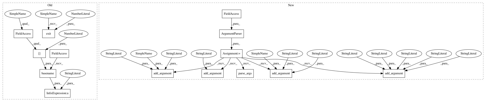

6a289fefd72f038c8cc14826f63624950f5de1f8,gensim/models/lda_dispatcher.py,,main,#,176
Before Change
logging.basicConfig(format = "%(asctime)s : %(levelname)s : %(message)s", level=logging.INFO)
logger.info("running %s" % " ".join(sys.argv))
program = os.path.basename(sys.argv[0])
// make sure we have enough cmd line parameters
if len(sys.argv) < 1:
print(globals()["__doc__"] % locals())
sys.exit(1)
if len(sys.argv) < 2:
maxsize = MAX_JOBS_QUEUE
else:
maxsize = int(sys.argv[1])
utils.pyro_daemon("gensim.lda_dispatcher", Dispatcher(maxsize=maxsize))
logger.info("finished running %s" % program)
After Change
def main():
parser = argparse.ArgumentParser(description=__doc__)
parser.add_argument("--maxsize", help="How many jobs (=chunks of N documents) "
"to keep "pre-fetched" in a queue (default: %(default)s)",
type=int, default=MAX_JOBS_QUEUE)
parser.add_argument("--host", help="Nameserver hostname (default: %(default)s)", default=None)
parser.add_argument("--port", help="Nameserver port (default: %(default)s)", default=None, type=int)
parser.add_argument("--no-broadcast", help="Disable broadcast (default: %(default)s)",
action="store_const", default=True, const=False)
parser.add_argument("--hmac", help="Nameserver hmac key (default: %(default)s)", default=None)
parser.add_argument("-v", "--verbose", help="Verbose flag", action="store_const", dest="loglevel",
const=logging.INFO, default=logging.WARNING)
args = parser.parse_args()
logging.basicConfig(format="%(asctime)s : %(levelname)s : %(message)s", level=args.loglevel)
logger.info("running %s", " ".join(sys.argv))
In pattern: SUPERPATTERN
Frequency: 3
Non-data size: 14
Instances
Project Name: RaRe-Technologies/gensim
Commit Name: 6a289fefd72f038c8cc14826f63624950f5de1f8
Time: 2016-07-13
Author: menshikh.iv@gmail.com
File Name: gensim/models/lda_dispatcher.py
Class Name:
Method Name: main
Project Name: RaRe-Technologies/gensim
Commit Name: 6a289fefd72f038c8cc14826f63624950f5de1f8
Time: 2016-07-13
Author: menshikh.iv@gmail.com
File Name: gensim/models/lda_dispatcher.py
Class Name:
Method Name: main
Project Name: RaRe-Technologies/gensim
Commit Name: 6a289fefd72f038c8cc14826f63624950f5de1f8
Time: 2016-07-13
Author: menshikh.iv@gmail.com
File Name: gensim/models/lda_worker.py
Class Name:
Method Name: main
Project Name: akkana/scripts
Commit Name: bc1dcbae0bf198f3725dbcf4d3b9bcc4d63dc814
Time: 2019-07-19
Author: akkana@shallowsky.com
File Name: mapping/viewshed2view.py
Class Name:
Method Name: